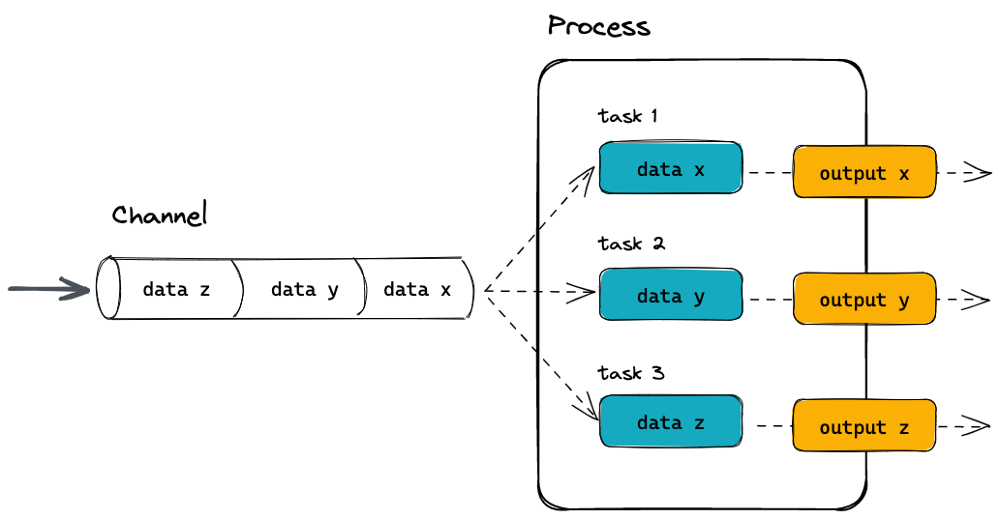
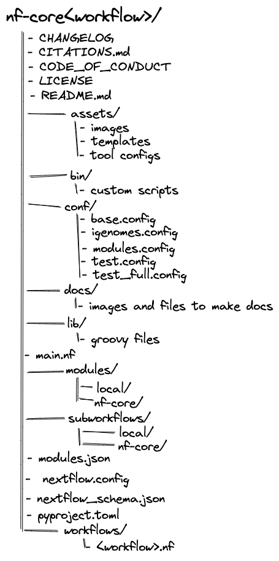
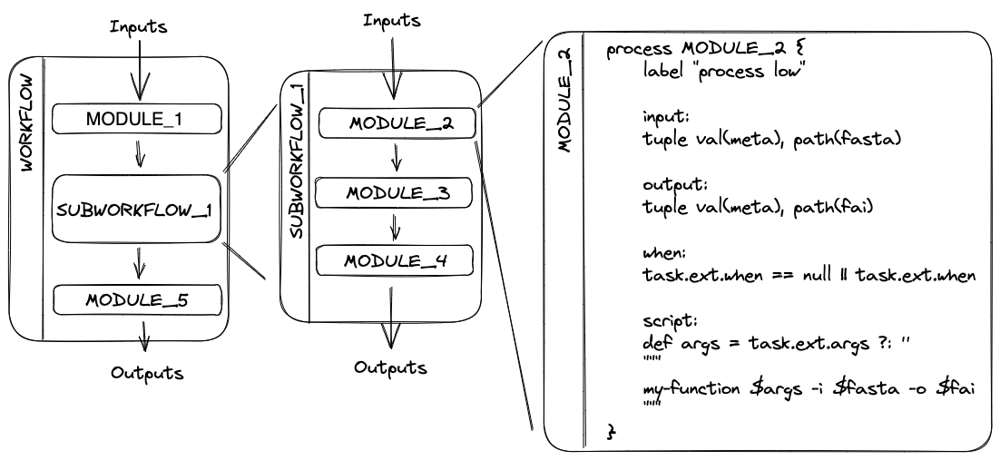

1.1 Introduction to nf-core and Nextflow
Objectives
- Learn about nf-core and its core features
- Learn about the core features of Nextflow
- Understand nf-core workflow structure
- Learn Nextflow terminology
- Learn about the nf-core community
1.1.1 What is nf-core?

nf-core is a community effort to collect a curated set of analysis workflows built using the workflow language Nextflow.
nf-core provides a standardized set of best practices, guidelines, and templates for building and sharing bioinformatics workflows. These workflows are designed to be modular, scalable, and portable, allowing researchers to easily adapt and execute them using their own data and compute resources.
The community is a diverse group of bioinformaticians, developers, and researchers from around the world who collaborate on developing and maintaining a growing collection of high-quality workflows. These workflows cover a range of applications, including transcriptomics, proteomics, and metagenomics.
One of the key benefits of nf-core is that it promotes open development, testing, and peer review, ensuring that the workflows are robust, well-documented, and validated against real-world datasets. This helps to increase the reliability and reproducibility of bioinformatics analyses and ultimately enables researchers to accelerate their scientific discoveries.
nf-core is published in Nature Biotechnology: Nat Biotechnol 38, 276–278 (2020). Nature Biotechnology
Key Features of nf-core workflows
- Documentation
- nf-core workflows have extensive documentation covering installation, usage, and description of output files to ensure that you won't be left in the dark.
- Continuous integration testing
- Every time a change is made to the workflow code, nf-core workflows use continuous integration (CI) testing to ensure that nothing has broken.
- Stable releases
- nf-core workflows use GitHub releases to tag stable versions of the code and software, making workflow runs totally reproducible.
- Packaged software
- Pipeline dependencies are automatically downloaded and handled using Docker, Singularity, Conda, or other software management tools. There is no need for any software installations.
- Portable and reproducible
- nf-core workflows follow best practices to ensure maximum portability and reproducibility. The large community makes the workflows exceptionally well-tested and easy to execute.
- Cloud-ready
- nf-core workflows are tested on AWS after every major release. You can even browse results live on the website and use outputs for your own benchmarking.
It is important to remember all nf-core workflows are open-source and community driven. Most pipelines are under active community development and are regularly updated with fixes and other improvements. Even though the pipelines and tools undergo repeated community review and testing - it is important to check your results.
1.1.1.1 The nf-core community
nf-core is a large global community which communicates and coordinates through several online platforms:
You are welcome to join the community on any or all of these platforms at any time!
The nf-core Slack is one of the primary resources for nf-core users. There are dedicated channels for all workflows as well as channels for common topics. If you are unsure of where to ask you questions - the #help and #nostupidquestions channels are a great place to start.
Joining multiple nf-core and Nextflow channels is important to keep up to date with the latest community developments and updates. In particular, following the nf-core and Nextflow Twitter accounts will keep you up-to-date with community announcements. If you are looking for more information about a workflow, the nf-core YouTube channel regularly shares ByteSize seminars about best practises, workflows, and community developments.
The nf-core community also organises several events each year, which are community-driven gatherings that provide a platform to discuss the latest developments in Nextflow and nf-core workflows. These events include community seminars, trainings, and hackathons, and are open to anyone who is interested in using and developing nf-core and its applications. Most events are held virtually, making them accessible to a global audience.
Upcoming events are listed on the nf-core event page and announced on Slack and Twitter.
1.1.2 What is Nextflow?
Nextflow is the workflow language and engine that underlies all nf-core pipelines. It is designed to provide a robust framework that lets us chain together all the command-line tools and scripts we need for our analyses into a single pipeline that is easy to execute.
Nextflow’s core features are:
- Workflow portability and reproducibility
- Workflow logic is separated from configuration, allowing workflows to be "written once and run anywhere" - from local machines to high performance computing (HPC) clusters and the cloud.
- Scalability through parallelisation
- Workflows define processes (individual computational tasks to run) and channels that define how data flows between them; this model natively takes advantage of parallelisation as datasets grow in size, allowing the same workflow code to seamlessly adapt to processing datasets with varying numbers of input samples with equal efficiency.
- Flexible configuration
- Nextflow supports defining configuration profiles and additional configuration files to override default settings and fine-tune processes for specific environments and datasets.
- Integration of existing tools, systems, and industry standards.

Because of these features, Nextflow has become one of the most prevalent workflow tools in the bioinformatics community, and this is why nf-core was built around Nextflow.
In today's workshop, we will be focusing on the configurability of nf-core pipelines, and so won't be further exploring the inner workings of Nextflow. If you would like more information about how Nextflow works and how to write your own pipelines, you can see our Nextflow for Life Sciences training material, as well as the Nextflow documentation website.
Poll 1.1.2
One of Nextflow's strengths is that it can be run on many different platforms and can run scripts written in lots of programming languages. Let us know:
- What platform do you run your bioinformatics workflows on? A desktop or laptop? An institutional HPC?
- What language do you prefer to write your scripts in? Bash? Python? R? Perl? Something else?
Questions about Nextflow
If you have questions about Nextflow and deployments that are not related to nf-core you can ask them on the Nextflow Slack. It's worthwhile joining both Slack groups and browsing the channels to get an idea of what types of questions are being asked on each channel. Searching channels can also be a great source of information as your question may have been asked before.
1.1.3 nf-core workflow structure
nf-core workflows follow a set of best practices and standardized conventions. nf-core workflows start from a common template and follow the same structure. Although you won’t need to edit code in the workflow project directory, having a basic understanding of the project structure and some core terminology will help you understand how to configure its execution.

Most nf-core workflows consist of a single workflow file (there are a few exceptions). This is the main <workflow>.nf file that is used to bring everything else together. Instead of having one large monolithic script, it is broken up into a combination of subworkflows and modules that are stored as separate .nf files.

A subworkflow is a group of modules that are used in combination with each other and have a common purpose. For example, the SAMTOOLS_STATS, SAMTOOLS_IDXSTATS, and SAMTOOLS_FLAGSTAT modules are all included in the BAM_STATS_SAMTOOLS subworkflow. Subworkflows improve workflow readability and help with the reuse of modules within a workflow. Within an nf-core workflow, you will find a mix of both nf-core subworkflows that were developed by the community and shared in the nf-core subworkflows GitHub repository, and local subworkflows that are specific to just that one pipeline.
A module is a wrapper for a process, the basic processing primitive to execute a user script. It can specify directives, inputs, outputs, and a script block. Most modules will execute a single tool in the script block and will make use of the directives, inputs, and outputs dynamically. Like subworkflows, modules can also be developed and shared in the nf-core modules GitHub repository or stored as a local module. All modules from the nf-core repository are version controlled and tested to ensure reproducibility.
Recap: Nextflow terms and concepts to remember
There is a lot of terminology and jargon that comes with Nextflow. Here is a helpful list of the most important terms that you will come across:
- Process: The fundamental unit of a Nextflow workflow. A process encapsulates a script to run a tool, defines its inputs and outputs, and specifies the resources it requires to run.
- Module: Another term for a *process.
- Channel: Objects that hold data and are passed between processes. Channels define which processes depend on each other and define the flow of data through the workflow.
- Workflow: The full collection of processes (modules) and the channels that connect them together. The workflow defines which processes will run and in which order.
- Subworkflow: A smaller collection of processes and channels that define a modular unit of the workflow. Subworkflows help to break up a workflow into logical sections, and are very useful as reusable components between different workflows. For example, a quality control subworkflow may group together multiple tools that together assess the quality of your data. nf-core pipelines make particular use of subworkflows, and when designing new nf-core pipelines you can re-use existing subworkflows published on the nf-core GitHub organisation.
- Configuration: Sets of process directives and Nextflow options that define how a Nextflow pipeline runs and how it interacts with the hardware it is run on.
- Parameters: Arguments and options that can be passed to the pipeline to alter how it runs and processes data.
main.nf: The typical entry point into a pipeline. This is the default file that Nextflow looks for when running a pipeline, and is responsible for calling all of the modules and subworkflows that make up the pipeline.nextflow.config: The main configuration file for a pipeline. This file will also refer to other.configfiles (typically stored in theconf/directory).modules/: A directory in which module (process) files are stored. Modules are further grouped into "local" modules specific to the pipeline and "nf-core" modules that are shared between multiple nf-core pipelines.subworkflows/: A directory containing all subworkflows. As with modules they are grouped into "local" and "nf-core" subworkflows.
Key points
- nf-core is a community effort to collect a curated set of analysis workflows built using Nextflow
- Nextflow is a workflow management engine and coding language for data-intensive computational workflows
- nf-core workflows are written in Nextflow, combining a series of modules and subworkflows into a main workflow